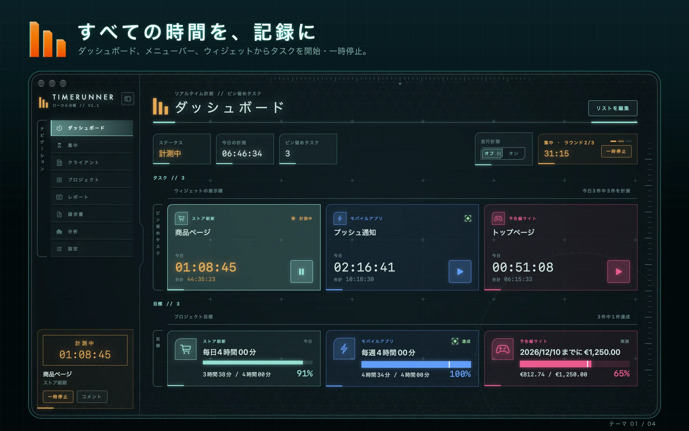
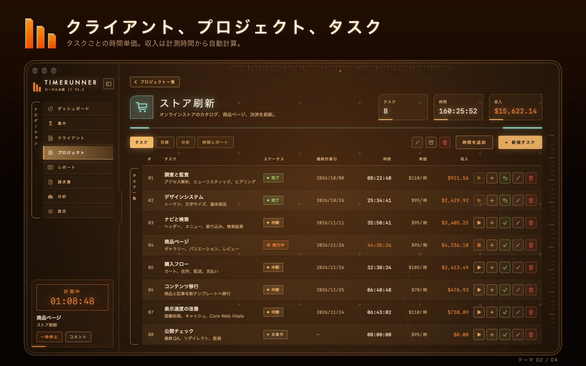
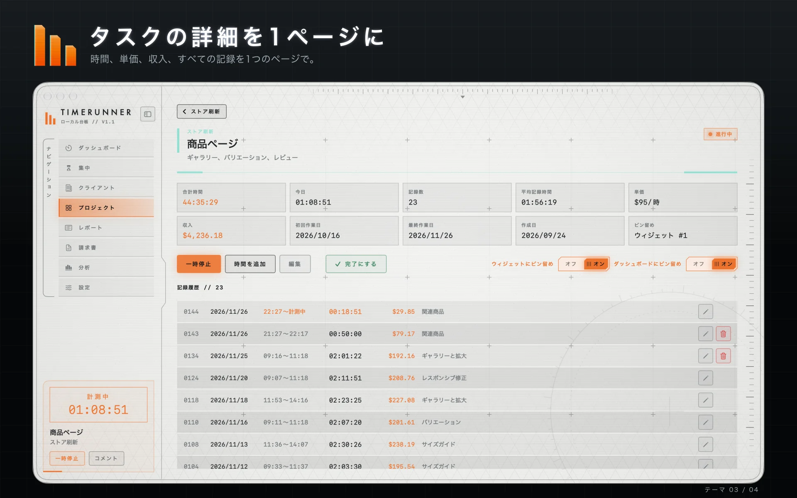
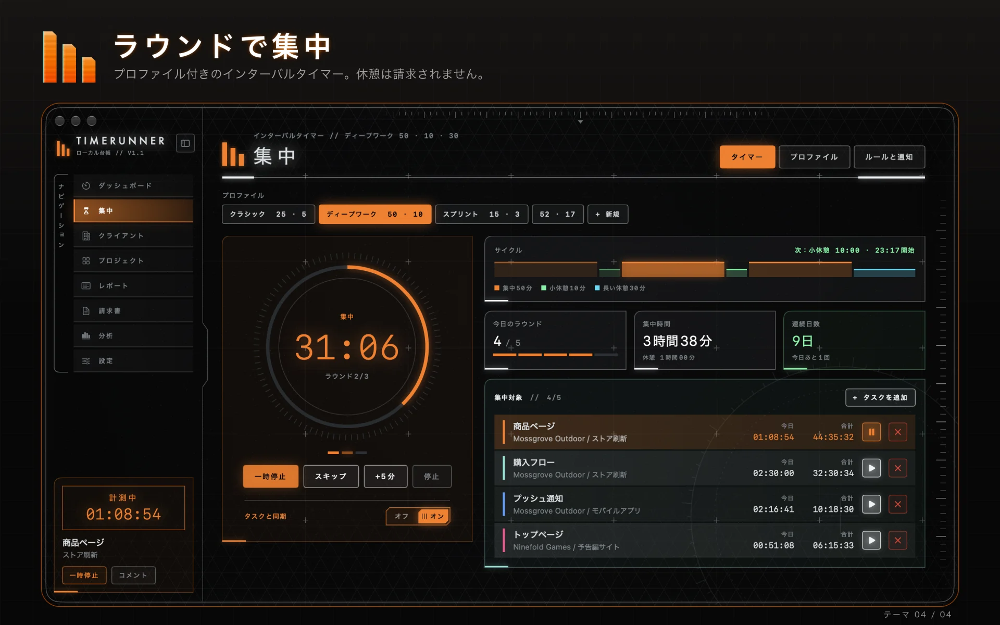
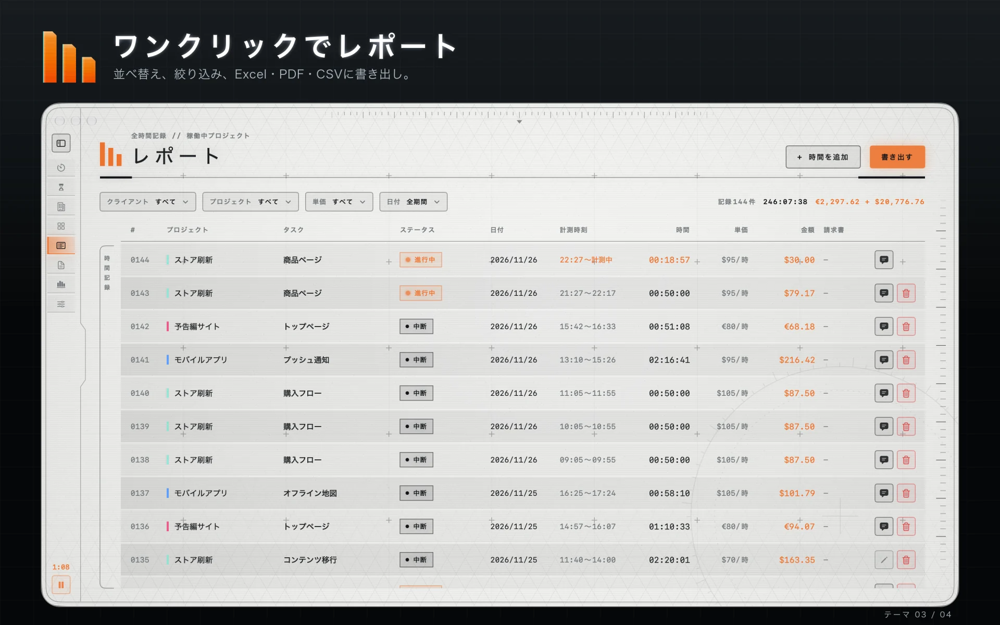
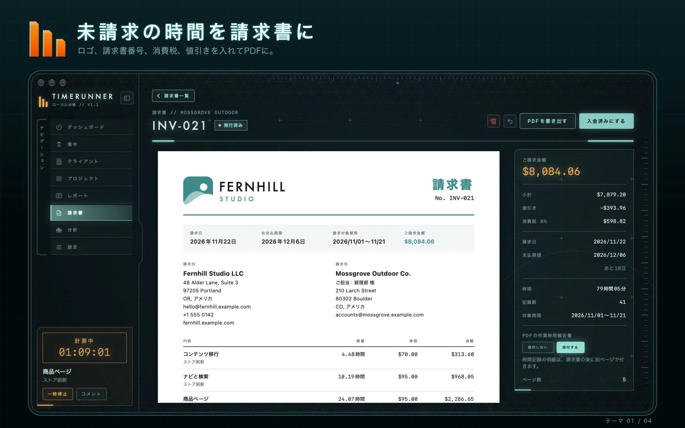
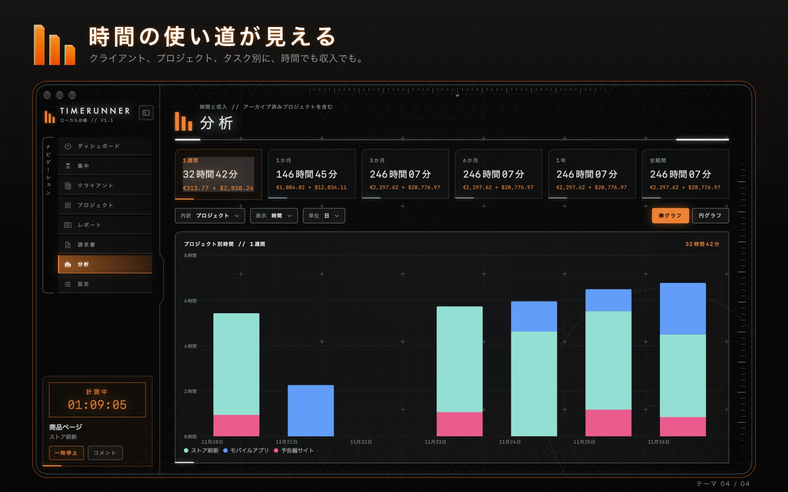
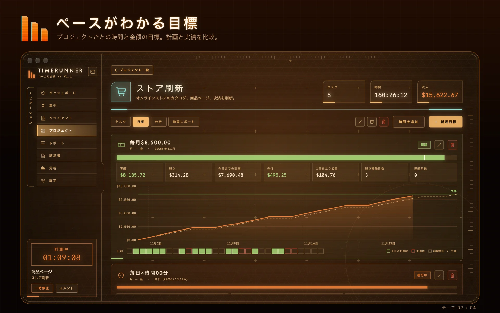
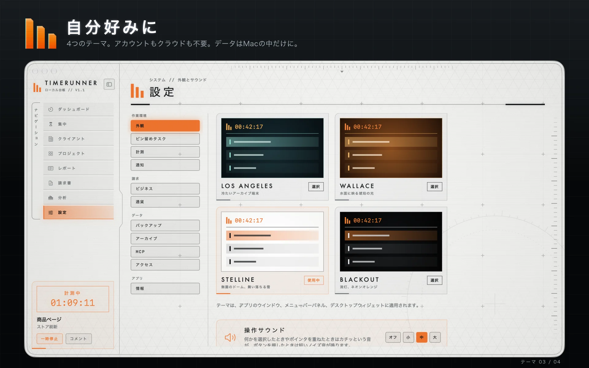
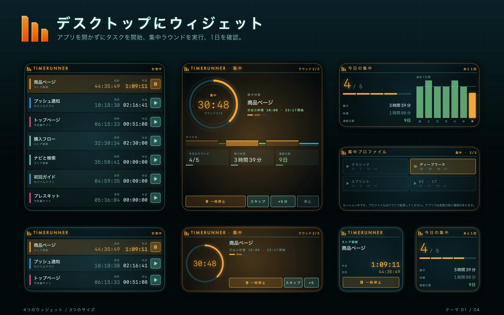

時間を、
請求するとおりに計測
メニューバー、ウィジェット、アプリから請求対象の時間を計測。ラウンドで集中し、目標を追い、PDFの請求書を作成。最初の1か月は無料。データはすべてMacの中に。


02 / 10
- クライアント → プロジェクト → タスク → 時間記録。単価と通貨はタスクごとに設定
- タイマーは一度に1つ、または複数を並行して

03 / 10
- 計測し忘れた時間を、日付、長さ、コメント付きで追加
- ステータス: 未着手、進行中、中断、完了

04 / 10
- ポモドーロ式のインターバルタイマー: 集中ラウンド、小休憩、最後のラウンドの後に長い休憩
- プロファイル: 25·5、50·10、15·3、52·17、そして自分用の設定
- タスクのタイマーを動かし、休憩中は止められるので、休憩時間は請求されません
- サウンド、通知、終了前の予告、休憩画面
- 集中のためのタスクリスト：セッションは、リストに入れたタスクにのみ連動します

05 / 10
- すべての記録を並べ替えできる表。クライアント、プロジェクト、単価、日付で絞り込み
- Excelブック (.xlsx)、PDF、CSVに書き出し

06 / 10
- クライアントの未請求時間からPDFの請求書を作成。すべて、または期間を指定。明細はタスク、プロジェクト、記録ごと
- ロゴ、カラー、支払い情報、請求書番号、税、値引き
- 下書き → 発行済み → 入金済み。期限超過は支払期限から自動で判定
- 発行済みの請求書に含まれる時間が二重に請求されることはありません

07 / 10
- 週、月、四半期、年、全期間の合計を、クライアント、プロジェクト、タスク別に、時間または収入で

08 / 10
- プロジェクトごとの時間または金額の目標: 1日、1週間、1か月あたり、または期日まで
- 進捗、ペース、計画と実績のグラフ、毎日のマーク

09 / 10
- 4つのテーマ。ティールのネオンから落ち着いた黒まで
- 使わないセクションは非表示にできます
- ウインドウを画面の隅に小さくしても、そのまま使えます
- 9言語に対応：英語、スペイン語、フランス語、ドイツ語、イタリア語、ポーランド語、ベラルーシ語、日本語、韓国語

10 / 10
- ワンクリックで開始・一時停止。アプリでも、メニューバーでも、デスクトップでも
- 3つのウィジェット: タイマー、今日の集中、プロファイル
- タスクをダッシュボードとデスクトップウィジェットに別々にピン留め
プライバシーを前提に設計
- アカウントなし、解析なし、広告なし。入力した内容がMacの外に出ることはありません
- Macと、選んだフォルダへの毎日の自動バックアップ
- Touch IDによるロック (任意)
- 各国の通貨と、主要な暗号通貨10種
AIに対応
- 内蔵のMCPコネクタで、Mac上のAIアシスタントがプロジェクトと時間を読み取り、新しい記録を追加できます。オンにした場合のみで、編集や削除はできません
最初の1か月は無料、その後は選べます
TimeRunnerは無料でダウンロードでき、最初の1か月はすべての機能が無料です。その後は次のプランから選べます。
月額
$2.99
毎月のお支払い
年額
$19.9912 × $1.99
年に1回のお支払い。App Storeで提供されている地域では12回の月払いも可能
買い切り
$39.99
お支払いは1回だけ。更新はありません
プランがない場合、TimeRunnerは読み取り専用になります。記録はMacに残り、引き続き開く、書き出す、バックアップすることができます。
サブスクリプションの料金はAppleアカウントに請求され、期間終了の24時間前までに解約しない限り、同じ期間・同じ料金で自動的に更新されます。管理と解約は、App Storeのアカウント設定から行えます。
米国での価格です。その他の国では、App Storeに現地の価格が表示されます。